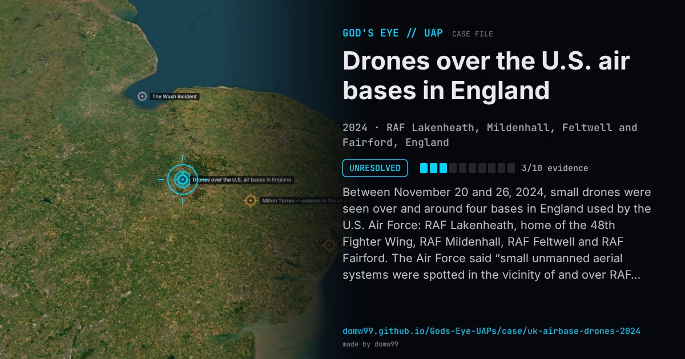

Drones over the U.S. air bases in England

Between November 20 and 26, 2024, small drones were seen over and around four bases in England used by the U.S. Air Force: RAF Lakenheath, home of the 48th Fighter Wing, RAF Mildenhall, RAF Feltwell and RAF Fairford. The Air Force said “small unmanned aerial systems were spotted in the vicinity of and over RAF Lakenheath, RAF Mildenhall and RAF Feltwell between 20 and 22 November”. Air traffic into Mildenhall was disrupted: on November 21 a KC-46 tanker that had brought F-35s across the Atlantic turned back and diverted to Prestwick. British troops with counter-drone equipment were sent to help, and the Ministry of Defence Police opened an inquiry. Similar reports came from U.S. bases in Germany that December.
Explanation
The U.S. Air Force and the Ministry of Defence confirmed the drones, and the Ministry of Defence Police opened an investigation, but the operators were not identified.
What was seen
Shape: Small drones of varying number and type
Witnesses: U.S. Air Force personnel; residents of nearby villages
Duration: About a week
Sources
- Air Force Times — Drones spotted near bases used by the US Air Force in England (2024)
- Military Times — Criminal probe launched after US Air Force spots drones over UK bases (2024)
- The Aviationist — Unauthorised drones continue to plague U.S. Air Force bases in the UK
- Wikipedia — 2024 drone sightings, United Kingdom